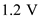
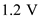
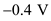
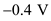
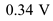
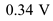
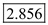
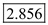

(a)
Derive the expression for ratio of.
The saturation of current of transistor is equals to the saturation current of transistor
is equals to the saturation current of transistor at.
at.
Substitute for  in the equation.
in the equation.
Substitute for  in the equation.
in the equation.
Thus, the expression for ratio of for CMOS inverter is,
for CMOS inverter is,
.
 for for
for for  for
for  , for
, for  ,  for and for in the equation.
,  for and for in the equation. for CMOS inverter is, .
for CMOS inverter is, .